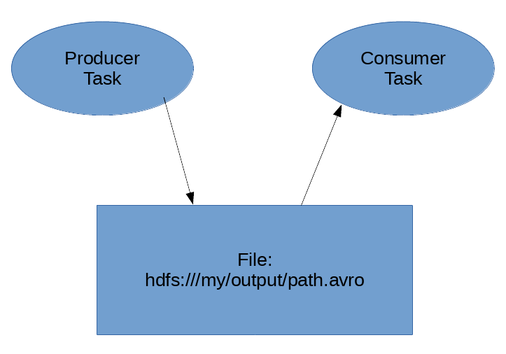

## Data plumbing with Luigi
Saturday, February 16, 2019

### A little about me
* I'm the Chief Maintiner of [Luigi](https://github.com/spotify/luigi).
* Currently working at Google in Zurich. (there is nothing about that in these slides)
* Arash Rouhani. [@Tarrasch](https://github.com/Tarrasch) on github.
### This talk
1. Introduction to luigi
2. Creating folders - why it's not trivial
3. An interesting ContextManager that solves 2.
### What is luigi?
[github.com/Spotify/luigi](https://github.com/Spotify/luigi)

A task orchestrator made in house at Spotify.
Open sourced in 2012.
#### even has spinoffs: luiti, mario, sciluigi


## A dependency graph

## Task DSL
It is very much like GNU Make.
```python
class MyTask(luigi.Task):
some_parameter = luigi.Parameter(default="hello")
def complete(self):
return True or False
def requires(self):
return [TaskA(), TaskB(param='yay')]
def run(self):
print(self.some_parameter, 'world')
```
## Small example
```python
import luigi
class HelloWorldTask(luigi.Task):
def run(self):
with self.output().open('w') as fd:
fd.write('Hello World')
def output(self):
return luigi.LocalTarget('hello.txt')
```
(default `complete()` checks for file `output()`)
## Lets run it!
```bash
$ luigi --module helloworld HelloWorldTask --local-scheduler
...
INFO: Scheduled HelloWorldTask() (PENDING)
...
===== Luigi Execution Summary =====
Scheduled 1 tasks of which:
* 1 ran successfully:
- 1 HelloWorldTask()
===== Luigi Execution Summary =====
$ cat hello.txt
Hello World
```
## And let's run it again!
```bash
$ luigi --module helloworld HelloWorldTask --local-scheduler
...
INFO: Scheduled HelloWorldTask() (DONE)
...
INFO:
===== Luigi Execution Summary =====
Scheduled 1 tasks of which:
* 1 present dependencies were encountered:
- 1 HelloWorldTask()
Did not run any tasks
===== Luigi Execution Summary =====
```
Luigi does ETL well
 ## Example pipeline
* Extract: `wget` some file from internet to storage
* Extract: dump table `X` from database to storage
* Transform: process using say Apache Spark
* Transform: use legacy tool `Y` for refinement
* Load: Upload to database **Z**.
Every bullet point is alike a
```python
class MyTask(luigi.Task): ...
```
Then we can serve webpages/music recommendations/whatever using **Z**.
## Let's focus on the Transform
* -
* -
* Transform: process using say Apache Spark
* -
* -
(I'm shifting to my second part of the talk now)
## Part 2. Creating a folder
With the luigi model, one just doesn't create a folder.
...
And here's why :)
## A common `Task` dependency
```python
class ProducerTask(luigi.Task):
def output(self):
return luigi.HdfsTarget('hdfs:///my/file.avro')
def run(self):
# ... do something that produces the output ...
class ConsumerTask(luigi.Task):
def requires(self):
return ProtucerTask()
def run(self):
# ... use self.output() (the HdfsTarget above.)
```
## Example pipeline
* Extract: `wget` some file from internet to storage
* Extract: dump table `X` from database to storage
* Transform: process using say Apache Spark
* Transform: use legacy tool `Y` for refinement
* Load: Upload to database **Z**.
Every bullet point is alike a
```python
class MyTask(luigi.Task): ...
```
Then we can serve webpages/music recommendations/whatever using **Z**.
## Let's focus on the Transform
* -
* -
* Transform: process using say Apache Spark
* -
* -
(I'm shifting to my second part of the talk now)
## Part 2. Creating a folder
With the luigi model, one just doesn't create a folder.
...
And here's why :)
## A common `Task` dependency
```python
class ProducerTask(luigi.Task):
def output(self):
return luigi.HdfsTarget('hdfs:///my/file.avro')
def run(self):
# ... do something that produces the output ...
class ConsumerTask(luigi.Task):
def requires(self):
return ProtucerTask()
def run(self):
# ... use self.output() (the HdfsTarget above.)
```
So contract is like this...

Consumer will start once the producer's file is there!
```python
class ProducerTask(luigi.Task):
def output(self):
return luigi.HdfsTarget('hdfs:///my/file.avro')
def run(self):
runcmd('/bin/spark MyTransformation '
'--input {} --output {}'.format(
self.get_input_somehow(),
self.output().path)
```
What will go wrong here?
### Input will exist before it's ready.
This is a big problem. The consumer will see that the input is already
produced and start consuming the input while it is still being written.
One solution would be to extend the luigi scheduler to handle this, but we want
to keep the server part simple.
### So we want temporary files/folders
Our need to write "all at once" is implemented by writing to temporary path,
and only if it was successful we write it to the final path.
Actually the luigi community did this for ages:
## The community's first solution:
```bash
$ ag luigi-tmp
luigi/contrib/hadoop_jar.py
49: y = luigi.contrib.hdfs.HdfsTarget(x_path_no_slash + '-luigi-tmp-%09d' % random.randrange(0, 1e10))
luigi/contrib/ftp.py
169: tmp_path = folder + os.sep + 'luigi-tmp-%09d' % random.randrange(0, 1e10)
187: tmp_local_path = local_path + '-luigi-tmp-%09d' % random.randrange(0, 1e10)
261: self.__tmp_path = self.path + '-luigi-tmp-%09d' % random.randrange(0, 1e10)
(also luigi/contrib/ssh.py and luigi/file.py)
```
## Downsides
* Every file format made their own implementation.
* And they take different parameters.
## So my "invention"
```python
class ProducerTask(luigi.Task):
def output(self):
return luigi.HdfsTarget('hdfs:///my/file.avro')
def run(self):
with self.output().temporary_path() as output_path:
runcmd('/bin/spark MyTransformation '
'--input {} --output {}'.format(
self.get_input_somehow(),
output_path)
```
## Does it work?
* I (at prev company) and others use it in production.
* It works for filsystems (local, gfs, hdfs, ssh, etc).
* The knowledge of moving files is encoded in the `FileSystem` interface rather
than folks maintaining `SparkTask`/`BigQueryTask`/etc.
## Part 3. How is is implemented?
* This is PyCon, so let's look at the implementation!
```python
class FileSystemTarget(Target):
...
def temporary_path(self):
class _Manager(object):
def __init__(self):
...
def __enter__(self):
...
def __exit__(self, exc_type, exc_value, traceback):
...
return _Manager()
```
```python
class _Manager(object):
def __init__(self):
num = random.randrange(0, 1e10)
slashless_path = self.target.path.rstrip('/')
.rstrip("\\")
self._temp_path = '{}-luigi-tmp-{:010}{}'.format(
slashless_path,
num,
self.target._trailing_slash())
tmp_dir = os.path.dirname(slashless_path)
if tmp_dir:
self.target.fs.mkdir(tmp_dir, parents=True,
raise_if_exists=False)
```
`__enter__` is easy. :)
```python
class _Manager(object):
def __enter__(self):
return self._temp_path
```
```python
class _Manager(object):
target = self
# This is the default signature for __exit__()
def __exit__(self, exc_type, exc_value, traceback):
if exc_type is None:
# There were no exceptions
self.target.fs.rename_dont_move(self._temp_path,
self.target.path)
return False # means we don't suppress the exception
```
Here is the interesting part, because our behavior is opposite of most context
mangers. We do an action when there are no exceptions.
refresher on `@contextmanager`
```python
from contextlib import contextmanager
@contextmanager
def managed_resource(*args, **kwds):
# Code to acquire resource, e.g.:
resource = acquire_resource(*args, **kwds)
try:
yield resource
finally:
# Code to release resource, e.g.:
release_resource(resource)
>>> with managed_resource(timeout=3600) as resource:
... # Resource is released at the end of this block ..
```
# Questions?
Also I'm curious if anyone seen similar usage of context managers (do X if
block didn't fail), of if you can reimplement it using `@contextmanager`